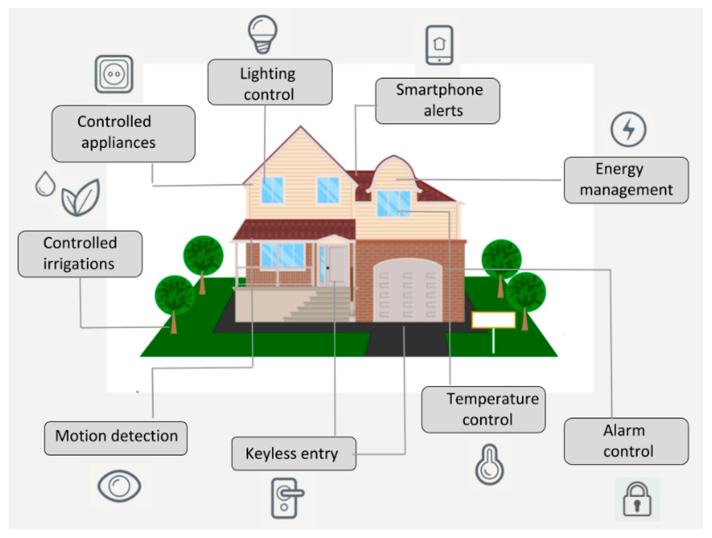
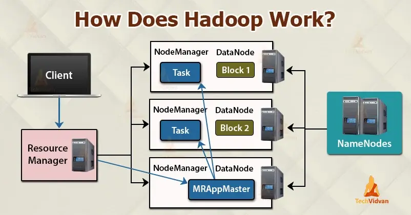

IOE
Shorts
- RFID (Radio Frequency Identification)
- IEEE 802.15.4 (ZigBee): Low power
- IEEE 802.11 WLANs (Wireless local area networks) aka Wifi
- Z-Wave: Smart homes communication protocol.
- BLE (Bluetooth Low Energy)
- CoAP (Constrained Application Protocol): Used for constrained devices (e.g: IOT devices)
- MQTT (Message Queuing Telemetry Transport): Is a messaging protocol focused on asynchronous. for lightweight IoT applications.
- AMQP (Advance Message Queuing Protocol): designed for enterprise messaging
- LoRA (Long Range): low-power, wide-area networking protocol designed for long-range communication.
- LoRAWAN (Long Range Wide Area Network): Slimier to LoRA with advance features.
- LTE Long Term Evolution
- OT Operational Technology: Physical processes of IoT
- IT Information Technology: Primary concerned with technology of IoT system.
- IoTWF IoT World Form: Provides a framework for designing IoT system.
- IOB Internet of Behavior: focuses on how data influences human behavior and decision-making.
- STOMP Streaming Text Oriented Message Protocol: It provides a way for clients to send and receive messages in real-time.
- Irrigation: Solution that optimizes water usage in agriculture and landscaping.
- Hadoop is an open-source framework that stores and processes large amounts of data for applications.
- Data Refineries: Cleaning data swamp.
- Data Retention: Backup data.
Smart Device
Smart Objects are physical items equipped with sensors, actuators, and communication capabilities, enabling them to connect to the Internet and interact with other devices and systems.

Actuators
An actuator is a mechanical device for moving or controlling something.
An actuator converts one energy to other energy.
- Pneumatic Actuators:
- Use compressed air or gas to generate motion.
- Example: Packaging Machines
- Hydraulic Actuators:
- Use fluid pressure to generate motion.
- Example: Car jack
- Electric Actuators:
- Use electrical energy to generate motion.
- Example: Electric window opener in a car
- Magnetic Actuators:
- Use magnetic fields to generate force.
- Example: Refrigerator door seal
- Thermal Actuators:
- Use temperature changes to generate motion through material expansion or contraction.
- Example: Automatic coffee machine
- Mechanical Actuators:
- Use physical mechanisms like levers, gears, or cams to generate motion.
- Example: Mechanical pencil
Sensors
A device that responds to a physical stimulus(such as heat, light, gas pressure) and transmits a resulting impule.
| Type of Sensor | Definition | Power Requirement | Output Type | Example |
|---|---|---|---|---|
| Active Sensor | Sensors that emit energy (like light, sound, or radio waves) and measure the reflected or returned signal. | Requires external power | Emission of energy, measure response (e.g., light, sound) | LIDAR, Radar, Ultrasonic |
| Passive Sensor | Sensors that detect energy that is naturally emitted or reflected by an object (e.g., heat, light, radiation). | No external power required | Measures natural energy (e.g., light, heat) | Infrared sensors, Photodetectors |
| Analog Sensor | Sensors that output a continuous, variable signal that is proportional to the measured physical quantity. | May require external power | Continuous voltage or current | Thermistor, Analog pressure sensor |
| Digital Sensor | Sensors include internal circuits to convert the analog signal to a digital format | May require external power | Discrete signal (binary or digital) | Digital thermometer, Hall effect sensor |
Protocols
ZigBee (IEEE 802.15.4)

A family of standards for wireless personal area networks (WPANs). It offers low data rates, low power consumption, and long battery life.
Application Areas:
- Home automation
- Sensor networks
- Industrial automation
- Smart agriculture
RFID
Radio Frequency Identification is a technology that uses radio waves to identify and track objects.
flowchart LR
A[Processing Center]
B[RFID Reader] --> |Process receive info| A
B -.-> |Continuous Radio Signal| C[RFID Tag]
C --> |Send RF tag info| B
- RFID Tag: A device attached to an object that stores data (like an ID number) and communicates with a reader. Tags can be passive (no battery, powered by the reader) or active (battery-powered, can transmit signals).
- RFID Reader: A device that emits radio waves to communicate with RFID tags and collect data. It can be handheld or fixed and connects to a system for data processing.
- Processing Center: The system that processes and stores the data from the RFID reader, often integrating with business software like inventory management.
| Aspect | RFID | Bluetooth |
|---|---|---|
| Purpose | Identification and tracking. | Short-range communication. |
| Range | Up to hundreds of meters. | Typically up to 100 meters. |
| Communication Type | One-way or two-way (active). | Two-way communication. |
| Speed | Up to 640 Kbps. | Up to 3 Mbps. |
| Power | Passive (no power); active (battery). | Requires power for both. |
| Data Capacity | Limited. | Higher |
| Cost | Low | High |
| Use Cases | Inventory, access control. | File sharing, audio streaming. |
| Security | Basic | Strong |
| Interference | Metal, Liquid. | Other devices |
Z-Wave
flowchart LR
pc[Primary Contoller]
sc[Secondary Controller]
pc --> s1((Slave1)) -->
s4((Slave4)) --> s5((Slave5))
s4 --> s3((Slave3))
sc --> s2((Slave2)) --> s3
Components of Z-Wave:
- Home ID: Protocol uses ID field to separate the network from each other.
- Controller: Device can communicate with all the nodes of z-wave network.
- Slaves: Nodes receive the command and performs action based on the commands.
MQTT vs CoAP
| Feature | MQTT | CoAP |
|---|---|---|
| Full Form | Message Queuing Telemetry Transport | Constrained Application Protocol |
| Definition | Used for constrained devices (e.g: IOT devices) | Is a messaging protocol focused on asynchronous |
| Communication Model | Publish-Subscribe | Request-Response |
| Transport Protocol | TCP | UDP |
| Reliability/QoS | QoS Levels (0, 1, 2) | Confirmable/Non-confirmable |
| Overhead | Higher | Lower |
| Security | TLS | DTLS |
| Best Use Cases | Centralized IoT, messaging | Low-power, direct IoT |
| HTTP Compatibility | Limited | High |
MQTT
Is a messaging protocol focused on asynchronous.
Uses a publish-subscribe model, where devices (clients) publish messages to topics, and other devices subscribe to these topics to receive messages.
General purpose protocol.
Works over TCP/IP
flowchart LR
p[Publisher] -.-> |Message| b((Broker))
b --> |Message| Subscriber1
b --> |Message| Subscriber2
MQTT-SN
flowchart LR
p[Publisher] -.-> |Message| g([Gateway])
p2[Publisher] -.-> |Message| g
g --> b((Broker))
b --> |Message| Subscriber1
b --> |Message| Subscriber2
Optimized for low-power, low-resource sensor networks.
Works over UDP

CoAP
Uses a request-response model, similar to HTTP.
Designed for direct device-to-device communication without an intermediary, which is suited for simple, constrained networks.
flowchart LR
s1([Server])
s2([Server])
c1[Client] --> |Request| s1
s1 -.-> |Response| c1
c2[Client] --> |Request| s1
c3[Client] --> |Request| s1
c3 --> |Request| s2
s1 -.-> |Response| c3
s2 -.-> |Response| c3
c4[Client] --> |Request| s1
Layers of CoAP
flowchart TB
Application --> r
subgraph CoAP Layer
r[Request / Response] -->
m[Message]
end
m --> UDP
CoAP Messaging Modes
Confirmable: Used when reliable delivery is needed.
sequenceDiagram Client->>Server: Confirmable Server->>Client: ACKNon-Conformable: Used for messages that don’t require guaranteed delivery.
sequenceDiagram Client->>Server: Non MessagePiggybank: Provide an immediate response to a Confirmable (CON) request in the same ACK message.
sequenceDiagram Client->>Server: Confirmable Server->>Client: ACK + MessageSeparate: Used when the server cannot respond to a request immediately and needs more time to generate a response.
sequenceDiagram Client->>Server: Confirmable Server->>Client: Empty ACK Server->>Client: Separate Confirmable Message Client->>Server: ACK for Response
AMQP
Designed for enterprise messaging with high reliability and flexibility.
AMQP supports multiple patterns like Point-to-Point (one-to-one message delivery) and Publish/Subscribe (many-to-many message delivery).
flowchart LR
p([Publisher]) --> Exchange
subgraph AMQP Broker
Queue1 -.-
Exchange --> |Rotue Message
besed on binding 1| Queue1
Queue2 -.-
Exchange --> |Rotue Message
based on binding 2| Queue2
end
Consumer1 -.- |Subscribe to
the queue| Queue1
Queue1 --> |Send message| Consumer1
Consumer2 --> |Request message| Queue2
Queue2 --> |Send Message| Consumer2
HTML vs WebSocket
| Characteristic | HTTP | WebSocket | MQTT |
|---|---|---|---|
| Connection Type | Stateless | Persistent | Persistent |
| Connection | Request & Response | Full duplex | Publish-Subscribe |
| Overhead | High | Low | Very low |
| Latency | Higher | Low | Low |
| Message Delivery | Reliable, but slower | Reliable, with some overhead | QoS levels for guaranteed delivery |
| Use Cases | Infrequent updates | Real-time dashboards, chat apps | Remote sensors, telemetry |
HTML
sequenceDiagram
Client->>Server: Request
Server->>Client: Response
Client->>Server: Request
Server->>Client: Response
WebSocket
sequenceDiagram
Client->>Server: Request
Server->>Client: Response
Server->>Client:
Server->>Client:
Client->>Server: Request
Server->>Client: Response
Server->>Client:
Server->>Client:
Server->>Client: Connection Closed
LoRaWAN
LoRaWAN is a Low-Power Wide-Area Network (LPWAN) protocol designed for long-range, low-power, bidirectional communication.
Network Server: Manages the network, handling end device communication, security, and data routing.
flowchart LR
Device1 --> Gateway1
Device2 --> Gateway1
Device2 --> Gateway2
Device3 --> Gateway2
Gateway1 --> Internet
Gateway2 --> Internet
Internet --> ns[Network
Server]
ns --> as1[Application
Server]
ns --> as2[Application
Server]
ns --> as3[Application
Server]
LTE, LTE-A, LoRa, and LoRaWAN
| Features | LTE | LTA-A | LoRA | LoRaWAN |
|---|---|---|---|---|
| Full Form | Long Term Evolution | Long Term Evolution Advance | Long Range | Long Range Wide Area Network |
| Defination | wireless communication standard for mobile devices. Used in 4G | Improved version of LTE. | low-power, wide-area networking protocol designed for long-range communication. | Slimier to LoRA but suitable for large-scale IoT networks. |
| Coverage | Extensive | Improved | Excellent | Excellent |
| Data Rate | Up to 300 Mbps | Up to 1 Gbps | Up to 50 kbps | 0.3 - 50 kbps |
| Power Consumption | Moderate | Moderate | Very Low | Very Low |
| Scalability | Moderate | High | High | Very High |
| Use Cases | Smart cities, vehicles, health monitoring | Advanced smart city applications, AR, real-time health data | Smart agriculture, environmental monitoring, asset tracking | Smart metering, industrial IoT, smart cities |
Bluetooth Low Energy


+----------------------------------+
| Host |
| +----------+ +----------+ |
| | Generic | | Generic | |
| | Access | | Attribute| |
| | Profile | | Profile | |
| | (GAP) | | (GATT) | |
| +----------+ +----------+ |
| +-----------------------------+ |
| | Security Manager (SM) | |
| +-----------------------------+ |
| +-----------------------------+ |
| | Attribute Protocol | |
| | (ATT) | |
| +-----------------------------+ |
| +-----------------------------+ |
| | Logical Link Control and | |
| | Adaptation Protocol (L2CAP) | |
| +-----------------------------+ |
+----------------------------------+
| Controller |
| +-----------------------------+ |
| | Host - Controller Interface | |
| | (HCI) | |
| +-----------------------------+ |
| +-----------------------------+ |
| | Link Layer (LL) | |
| +-----------------------------+ |
| +-----------------------------+ |
| | Physical Layer (PHY) | |
| +-----------------------------+ |
+----------------------------------+
- Host Layer
- GAP (Generic Access Profile): Manages device discovery, connection.
- GATT (Generic Attribute Profile): Used for services like data synchronization.
- SM (Security Manager): Manages pairing, authentication, and encryption of communication.
- ATT (Attribute Protocol): Defines how GATT data is organized and accessed.
- L2CAP (Logical Link Control and Adaptation Protocol): Handles channel management for multiple data streams.
- Controller Layer
- HCI (Host-Controller Interface): Interface for communication between software and hardware functions.
- LL (Link Layer): Manages functions like advertising, scanning, and maintaining Bluetooth connections.
- PHY (Physical Layer): Handles the actual transmission of radio signals over the air.
Bluetooth vs ZigBee
| Feature | Bluetooth | ZigBee |
|---|---|---|
| Range | Short range (up to 10 meters) | Longer range (up to 100 meters) |
| Power Consumption | Low power consumption | Very low power consumption |
| Data Rate | Higher data rate (up to 24 Mbps) | Lower data rate (up to 250 kbps) |
| Topology | Star, master-slave | Mesh |
| Applications | Wireless headsets, speakers, mobile devices | Smart home automation, industrial sensors, healthcare devices |
| Cost | Lower | Higher |
| Security | Good security features | Good security features |
IEEE 802.11 Wifi
IEEE 802.11 is a set of standards for wireless local area networks (WLANs), commonly known as Wi-Fi.

STOMP
Streaming Text Oriented Message Protocol provides a way for clients to send and receive messages in real-time.
IOT
IoT (Internet of Things) refers to the network of physical objects or "things" that are embedded with sensors, software, and other technologies, enabling them to connect, collect, and exchange data over the internet or other networks.
- Characteristics of IOT Cloud
- On-demand self-service
- Broad Network Access
- Resource pooling
- Monitoring
- Scalability
- IoT Application Transport Methods
- Wi-Fi
- Bluetooth
- Zigbee
- Z-Wave
- Cellular Networks (2G, 3G, 4G, 5G)
IoT Functional Block

IoT architecture

IOT Communication Model
Request-Response
flowchart LR
Client --> |Request| Server
Server --> |Response| Client
Server --> |Request| Resources
Resources --> |Response| Server
Publish-Subscribe
flowchart LR
p[Publisher] -.-> |Message| b((Broker))
b --> |Message| Subscriber1
b --> |Message| Subscriber2
Push-Pull
flowchart LR
Publisher --> |Message pushed to Queue| q1([Queue])
Publisher --> q2([Queue])
q1 --> |Message pulled from queue| Consumer1
q2 --> Consumer2
Exclusive Pair
sequenceDiagram
Client->>Server: Request
Server->>Client: Response
Server->>Client:
Server->>Client:
Client->>Server: Request
Server->>Client: Response
Server->>Client:
Server->>Client:
Server->>Client: Connection Closed
IoT Data Visualization
Data visualization in IoT refers to the graphical representation of data collected from various IoT devices and sensors.
Tools for Data Visualization in IoT
- Tableau
- Power BI
- QlikView
- Matplotlib
- D3.js
- Chart.js
- Cloud-Based Platforms
- Google Data Studio
- Amazon QuickSight
- Microsoft Power BI
NoSQL in IoT

Need of new network architecture/protocol in IoT
As the number of connected devices continues to skyrocket, traditional network architectures are struggling to meet the unique demands of IoT.
Key factors driving the need for a new network architecture:
- Large Number of Devices
- Low Latency Requirements
- Real-Time Requirements
- Security and Privacy Concerns
- Power Constraints
New network architectures:
- 5G
- LPWAN (Low-Power Wide-Area Networks)
- MQTT
- CoAP
- Edge Computing
- Fog Computing
IOT Analytics
flowchart TB
s[Sensing &
Delivery Network] --> | Raw IOT Data | dg
dg[Data Aggreation] --> |Actionable insights| s
da[Data Analytics] --> |Feedback| dg
dg --> |Actionable
insights| da
- Process flow in IOT analytics
- Data collection
- Data Pre-processing
- Analysis of data
- Train
- Deployment
- Challenges of IOT Analytics
- Data Volume & Velocity
- Data Variety
- Scalility
- Data Quality
- Strategies to organize data
- Data Collection
- Data Integration
- Data Storage
- Hierarchical Storage
- Edge Storage
- Cloud Storage
- Database Options
- NoSQL
- Relational Database
- Hierarchical Storage
- Data Preprocessing
- Data Visualization
- Data Reporting
- Types of IoT Analytics
- Descriptive: Understanding past treands
- Diagnostic: Why something happen
- Predictive: Forecasting future
- Prescriptive: Recommending actions
IOT Analytics in Healthcare
- Utilization of IoT Analytics in Healthcare
- Real-time monitoring
- Analytics
- Personalize
- Decision Making
- Essential Dashboard Parameters
- Medication Adherence: Monitoring of medication schedules and adherence levels.
- Physical Activity: Data on steps and exercise to encourage healthy lifestyles.
- Sleep Patterns: Insights into sleep quality and duration.
- Emergency Alerts: Notifications for critical health changes.
- Historical Data Trends
IoT data analytics vs IoT network analytics
| Feature | Data Analytics | Business Benefits |
|---|---|---|
| Focus | Identifying patterns. | Using insights for outcomes. |
| Objective | Uncover data insights. | Drive growth and profit. |
| Tasks | Data collection, analysis & visualization. | Planning and decision-making. |
| Tools | Statistical and visualization. | BI, reporting, forecasting. |
| Outcomes | Insights and predictions. | Increased revenue, reduced costs. |
| Example | Customer segmentation based on behavior. | Tailoring marketing to boost sales. |
I-IoT

Similarities Between I-IoT and IoT
- Connectivity
- Data-Driven Insights
- Use of Cloud Computing
- Automation and Efficiency
- Protocol and Standards
Differences Between I-IoT and IoT
| Feature | IoT | IIoT |
|---|---|---|
| Definition | Connects consumer devices online. | IoT applied in industrial settings. |
| Use Case | Consumer | Industry |
| Devices | Consumer gadgets | Industrial equipment |
| Network | Low latency, Wi-Fi, Bluetooth. | High reliability, Ethernet, 5G. |
| Security | Basic security. | Advanced, operation-critical. |
| Scalability | Small scale. | Large, complex systems. |
| Data Volume | Low, fewer devices. | High, continuous data. |
| Reliability | Lower | High |
| Examples | Smart homes, wearables. | Smart factories, predictive systems. Sensors |
| Setup | Simple | Complex |
| Maintenance | Easy | Hard |
| Cost | Lower cost. | Higher |
IoT World Forum (IoTWF)
The IoT World Forum (IoTWF) Standardized Architecture is a seven-layer model that provides a framework for understanding and designing IoT systems.
flowchart TB
Application -->
Service -->
dm[Device Management] -->
Network -->
ds[Data Storage] -->
Device -->
Physical
- Service Layer: This layer provides the services that enable the IoT system to function. It includes services like data analytics, machine learning, and security.
- Network Layer: This layer provides the connectivity between devices and the cloud. It includes technologies like Wi-Fi, Bluetooth, cellular networks, and LPWANs.
- Data Storage Layer: This layer stores the data generated by IoT devices. It can be stored on-device, on-edge devices, or in the cloud.
- Device Layer: This layer consists of the physical devices that collect data from the environment. It includes sensors, actuators, and other devices.
Internet of Behavior (IOB)
It extends the concepts of the Internet of Things (IoT) by focusing not just on the devices and data they generate, but also on how that data influences human behavior and decision-making.
Smart Devices
Smart Home

Smart Smoke detection system

Sensor:
- Temperature
- Humidity Sensors:
- Smoke Detectors
- Gas Sensors
- Camera Sensors
Actuators
- Alarm system
- Smart ventilation
- Smart locks
- Smart lighting
Smart Irrigation System
flowchart LR
ss[Sensing
System] -->
cc[Control
Circuit] -->
wp[Water
Pump] -->
Soil --> ss
ps[Power Supply] --> cc
Solution that optimizes water usage in agriculture and landscaping.
Smart Farming
flowchart LR
Oscillator --> cc[Control
Circuit]
ps[Power Supply] --> cc
cc --> LCD
cc --> Motor
cc --> Network
Oscillator: Generates a clock signal, essential for timing and synchronization within the microcontroller
Cloud
Cloud vs Fog vs Edge Computing
flowchart TD 1[Cloud Computing]-->2[Fog Computing] 2-->3[Edge Computing]
| Aspect | Edge Computing | Fog Computing | Cloud Computing |
|---|---|---|---|
| Location | Local devices | Intermediate layer | Centralized data centers |
| Latency | Very low | Low | Higher |
| Bandwidth Usage | Minimize | Reduces usage | Higher usage |
| Scalability | Limited | More scalable | Highly scalable |
| Data Storage | Minimal storage | Temporary storage | Extensive storage |
| Use Cases | Real-time apps | Low-latency applications | Heavy processing |
| Management | Limited management | Requires managing fog and edge | Centralized management |
| Security | Device-level risks | Enhanced but still risky | Robust protocols, potential risks |
Types of Cloud
Public Cloud
flowchart TB
c((Cloud Service
Provider))
Enterprise1 <--> c
Enterprise2 <--> c
c --> User1
c --> User2
Private Cloud
flowchart TB
c((Cloud Service
Provider))
Enterprise1 <--> c
c --> |Dedicated Server| Enterpirse2
Hybrid Cloud
Combination of Public and Private cloud.
Community Cloud
Fulfill specific need of community of a business sector.
flowchart TB
c --> Enterprise1
c --> Enterpirse2
c --> Enterpirse3
subgraph Dedicated to Community
c((Cloud Service
Provider))
end
subgraph Community User
Enterprise1
Enterpirse2
Enterpirse3
end
Cloud Computing
The practice of using a network of remote server hosted on the internet to store manage and process data.
- Software as a Service (SaaS)
- Delivering application over the internet.
- Example: Slack, Salesforce, Google Drive
- Platform as a Service (PaaS)
- Platform and enviroment to allow developers to build over internet
- Example: AWS, Azure, Google Cloud
- Infrastructure as a Service (IaaS)
- Provides on-demand access to computing resources: storage, netwroking, servers and more.
- Example: AWS, Azure, Google Cloud
- Function as a Service (FaaS)
- Allows developers to run and manage code without needing to build and maintain the infrastructure.
- Example: AWS Lambda, Azure Functions, Google Cloud Functions, Cloudflare Workers
Data
Data Retention
A data retention strategy outlines how an organization manages the storage, archiving, and deletion of data over time.
- Data Identification
- Data Classification
- Retention Period
- Legal
- Business
- Industry
- Storage Location
- Local
- Cloud
- Hybrid
- Data Security and Privacy
- Data Deletion
Data Refineries
A data lake, while a powerful tool for storing vast amounts of raw data, can quickly turn into a data swamp if not properly managed.
They are essentially data processing pipelines that transform raw data into refined, usable information.
How Data Refineries Work
- Data Ingestion
- Data Cleaning and Standardization:
- Data Transformation
- Data Security and Privacy
The Role of Data Refineries
- Prevent Data Swamp
- Improve Data Quality
- Enhance Data Accessibility
- Protect Data Privacy
Data Visualization
IoT Visualization_ refers to the process of representing data from connected IoT devices in visual formats like graphs, charts, and maps.
Types of Visualization formats:
- Graphs
- Charts
- Maps
- Table
Types of Visualizations:
- Time Series Visualization
- Geospatial Visualization
- Interactive Visualization
- Dashboard Creation
Hadoop
Hadoop is an open-source framework that stores and processes large amounts of data for applications
